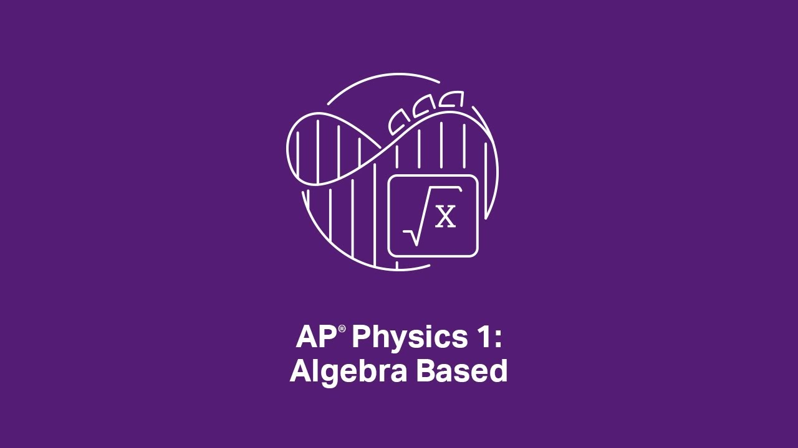

Well, physics is the study of interactions! It's fundamental to the world and just quite concerned with describing how the world works man. Why don't you fall through your bed? Why are doorknobs on the very edge of most doors? How the heck does the inside of your computer work? ...Who knows?
obbviously because I'm a loser lamo wannabe. Jk! I'm interested in electronics (think Arduinos, microcontrollers, cyber decks >:P) and that stuff requires coding! Or at least, a fundamental understanding of it. So! I wanna learn. But, my school schedule is full so I can't take any classes to teach me such >:(. So, for once in my life, I decided to not be a bum and to jusstttt learn (by myself) (maaybe a bad idea (it would be a bad idea, but I've got amazing friends and projects at Hack Club that are giving me the amazing drive (!) to learn, so it's not a bad idea). We love that. Also, I'm in physics and it can be so hard but it's so cool and genuinely fascinating. This is just a lil website to help me review physics ahead of my exam and learn how to code.
tl;dr: I'm combining two interests of mine, physics and coding/electronics/tech/whateveryoucallit, in order to get better at both!
lol, u don't have to care. My goal is just for each page in this Website to get progessively cooler. Some of my personal favorite website layouts right now are Hack Club Sleepover's and Kode With Klossy. I loved Sleepover's artistry, cohesive theme, and embedded elements like the Spotify (can I say brand names?) playlist. As for Kode wwith Klossy, they just had layers upon layers of elements and features which made the layout so... fun! I wanna do that, and maaybe code some electronics along the way, heh.
So, you can care about seeing my real time growth with coding/programming languages/whatever you wanna call this tech stuff. Right noww, I'm writing using *checks W3schools video* elements and tags I didn't know of/understand yesterday. Do you knot what <.p> and <.h1>, all the way to <.h6> mean? coz I do!!! muahahha and that's so cool. I love learning and getting to learn and I am so grateful to God for these opportunities. Also I stumbled into the <.iframe> element, and am really excited to use it for some models later on!! I think it could be cool lol
You don't have to care, but you could see/skim the real life effects of... learning! and also learn super cool physics along the way